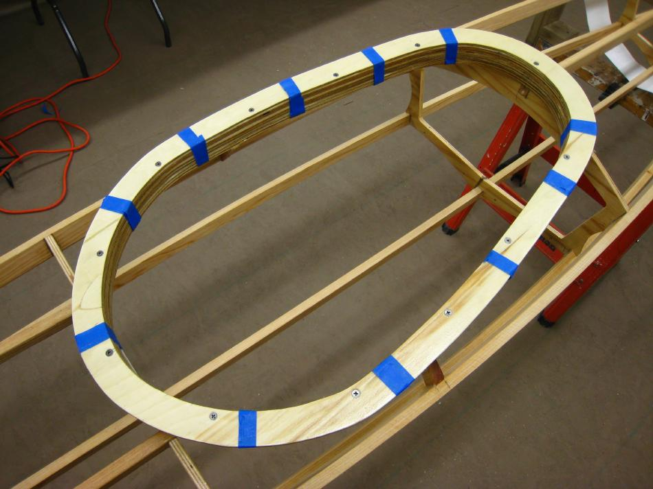

| Coaming | Menu Previous Page Next Page |
|

Tape the coaming to the base plate for drilling holes for 2 1/2" stainless machine screws. Mark and drill a hole every 6" centered over the 3/4" coaming rings. Countersink the holes so that the screw heads are flush. After drilling, insert the screws and tighten then down using stainless locking nuts. The coaming will be later removed for applying a coat of urethane.
|
|